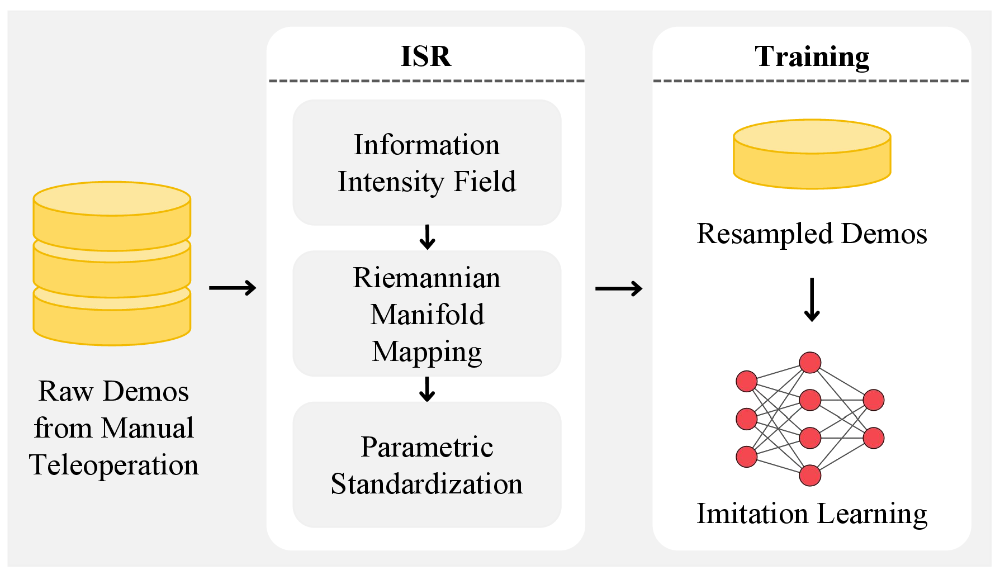
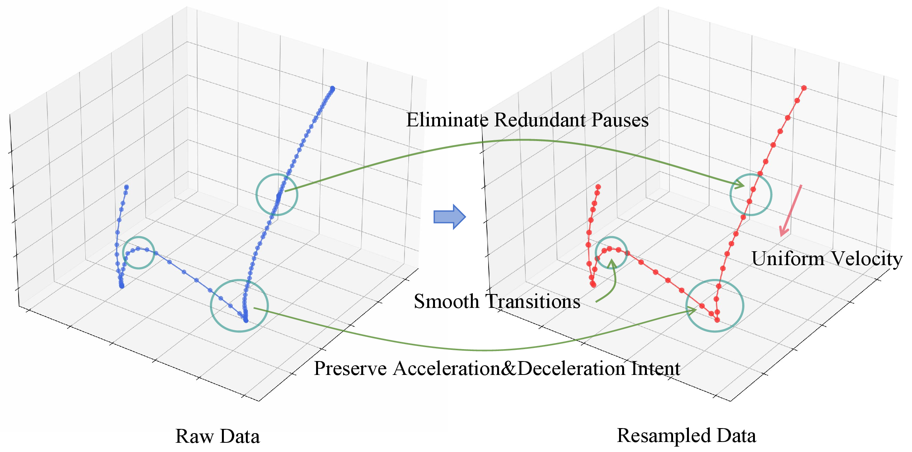
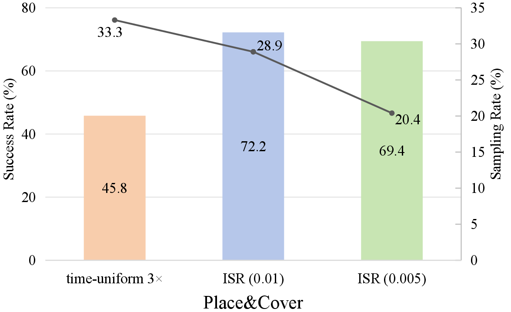
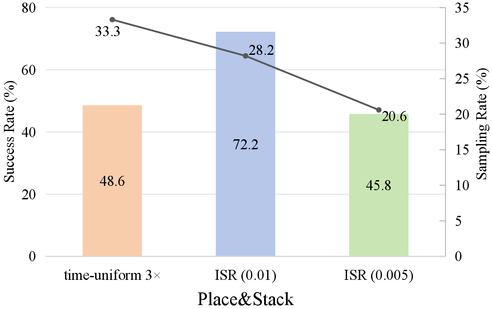
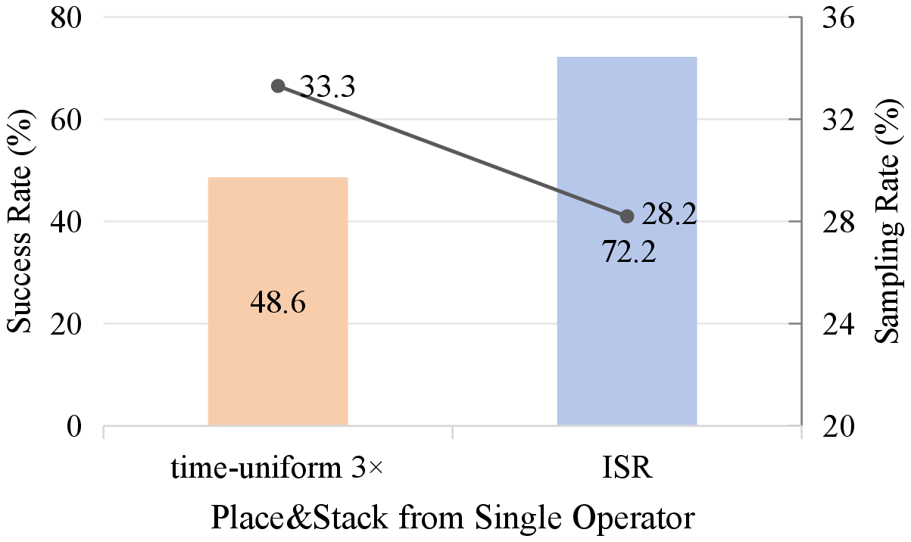
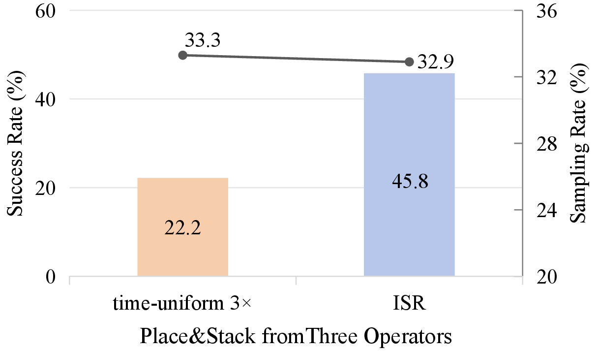

Imitation learning for robotic manipulation relies on large sets of human demonstration trajectories, which are often noisy and temporally irregular due to variable operator speed, intermittent pauses, and inconsistent action density. A common preprocessing strategy is time-uniform downsampling to shorten sequences, but it cannot effectively remove speed-induced non-uniformity or redundant pauses. This mismatch degrades data quality and hinders policy learning. To address this issue, we propose Information-Standardized Trajectory Resampling (ISR), an offline preprocessing method for effective imitation learning. ISR resamples each trajectory by enforcing approximately equal information distance between adjacent points. Specifically, we map trajectories onto an information-modulated Riemannian manifold and perform geodesic-equidistant parameterization. We construct an information-intensity field from velocity and acceleration norms: the velocity term removes small-motion redundancy, while the acceleration term preserves high-curvature and fine-manipulation phases. We evaluate ISR on three real-world manipulation tasks with mainstream imitation learning policies. Compared with the baseline time-uniform 3x downsampling, ISR improves task success rates by about 25%, remains robust across datasets collected from different operators, and reduces both dataset size and training cost.
Information-Standardized Trajectory Resampling (ISR) is an offline preprocessing method that resamples demonstration trajectories so that consecutive points carry approximately equal kinematic and dynamic information. From the end-effector position sequence, ISR computes velocity and acceleration, then constructs an information-intensity field from two complementary terms: a velocity term that measures the instantaneous displacement rate and an acceleration term that measures the rate of velocity change. Using this field as a conformal factor, ISR maps each trajectory onto a Riemannian manifold and formulates resampling as a geodesic-equidistant optimization problem, where consecutive resampled points are constrained to have approximately equal generalized distance. The result is a compact, standardized trajectory that preserves the start and end points and retains the operator's manipulation intent with significantly fewer action points.

ISR redistributes samples from low-value motion to task-critical phases. Its velocity term compresses pauses, hesitation, and slow low-displacement transit into larger, more uniform steps, reducing operator-speed artifacts and redundant frames; its acceleration term keeps denser coverage around sharp turns, deceleration-to-contact, and fine manipulation, preventing compact but essential actions such as grasping, alignment, and placement from being skipped. This information-balanced resampling improves downstream success while retaining only about 28-40% of the original action points and remaining more robust when demonstrations come from multiple operators.

We evaluate ISR on three real-world manipulation tasks: Place&Cover, Place&Stack, and Push-T. The evaluation contains three studies. Baseline Comparison compares ISR with time-uniform 3x downsampling under two imitation learning policies, π0.5 and VO-DP. Ablation Study varies the acceleration weight while keeping the velocity term fixed to analyze how dynamic-information preservation affects downstream policy learning. Cross-Operator Robustness tests whether ISR can absorb operator-specific differences in speed, pauses, and teleoperation style when demonstrations are collected from multiple people.
Across the three studies, ISR consistently improves downstream policy learning by redistributing samples according to task-relevant motion information rather than timestamp spacing. The baseline comparison shows broad gains across tasks and policy backbones; the ablation study shows that the acceleration term is essential for contact-sensitive manipulation; and the cross-operator study shows that information standardization reduces style-induced conflicts when demonstrations are collected from multiple operators.
| Method | Place&Cover | Place&Stack | Push-T | AVG. (↑) |
|---|---|---|---|---|
| 3x + π0.5 | 45.8 (33.3) | 48.6 (33.3) | 48.9 (33.3) | 47.8 |
| ISR + π0.5 | 72.2 (28.9) | 72.2 (28.2) | 71.1 (40.2) | 71.8 |
| 3x + VO-DP | 56.9 (33.3) | 66.7 (33.3) | 64.4 (33.3) | 62.7 |
| ISR + VO-DP | 77.8 (28.9) | 91.6 (28.2) | 71.1 (40.2) | 80.2 |
Success rate is shown in percent; resampling ratio is shown in parentheses.




ISR currently operates on end-effector position trajectories. Extending the information-intensity field to joint-space representations could broaden its applicability to robots and tasks where joint-level motion carries important information beyond the end-effector path. In addition, the acceleration weight λacc is manually selected for each task, since different manipulation behaviors can have different sensitivity to acceleration-level features. An adaptive mechanism that infers this weight from trajectory statistics would make ISR more general and easier to deploy across new tasks.
@article{yang2026isr,
title={Improving Robotic Imitation Learning via Trajectory Standardization},
author={Licheng Yang and Lingfeng Qian and Fei Zheng and Yonghao He and Wei Sui and Shuangshuang Li and Hu Su},
year={2026},
eprint={2606.22907},
archivePrefix={arXiv},
primaryClass={cs.RO},
url={https://arxiv.org/abs/2606.22907}
}